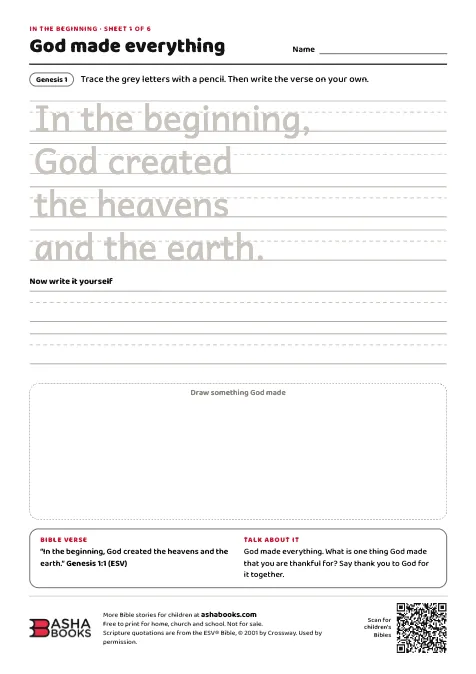

Free printables
Bible activity sheets for kids.
Puzzles, mazes and tracing pages from the Old and New Testaments, ready to print for your children at home or your Sunday school class.
- A4, black and white
- A Bible verse on every sheet
- Free for home, church and school
Activity pack 1 · Genesis
In the Beginning: Creation to Joseph
Six sheets that follow the story of Genesis, from God making the world to Joseph forgiving his brothers. Each one has a Bible verse and a question to talk about together.
PDF · 543 KB · Answer key 493 KB
Activity pack 2 · Gospels
Meet Jesus: Stories from the Gospels
Six sheets about Jesus: the friends he called, the miracles he did, the stories he told, the people he met, and the first Easter.
PDF · 576 KB · Answer key 523 KB
Read the whole story
Bibles and story books for children
Children's Bibles and Bible storybooks, delivered across India.


For parents and teachers
How to use the sheets
- 1Print on A4Every sheet prints in black and white on one A4 page. Use "fit to page" if your printer is set to Letter size.
- 2Read the story firstEach sheet names the Bible passage. Read it together before the activity, then use the verse and the question at the bottom of the sheet to talk about it.
- 3Check the answersEach pack has an answer key with the solutions to its word search, maze, crossword, matching and story order.
- 4Share them freelyPrint as many copies as you need for your family, church or school. Please don't sell them.